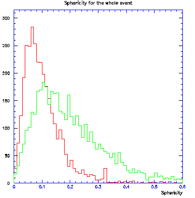
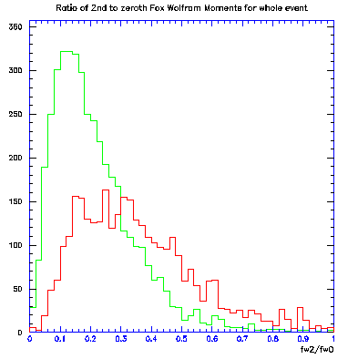

The RhoTools Package
The RhoTools
package provides a diverse set of tools for use with HEP analyses. This package
can be used interactively in a ROOT session together with the RhoMath and the
RhoBase package. RhoTools contains classes that calculate variables associated
with an event, or part of an event (called event shape variables), and utility
functions to carry out tasks such as boosting a candidate and all its decay
products, and doing simple vertexing (adding 4 momenta). Further classes
provide Monte Carlo truth association with reconstructed TCandidates.
Tools in RhoTools
Tools for calculating event
shape variables / qqbar background discrimination
- TThrust (Original Author :
Scott Metzler)
- TSphericity (Original Author :
Sebong Chun)
- TFoxWolfMom (Original Authors :
Alex Samuel and Theresa Champion)
- TFWMoments (Original Authors :
Alex Samuel and Theresa Champion)
- TCones (Original Author :
Gianluca Cavoto)
Tools providing additional
event information
- TBooster (Original Author :
Gautier Hamel de Monchenault)
- TTotalMomentum (Original Author :
Paul Harrison)
Finders / Vertexers
- TOpAdd4 (Original Author :
Bob Jacobsen)
- TOpMakeTree (Original Author :
Bob Jacobsen)
- TAdd4Vertexer (Original Author :
Gautier Hamel de Monchenault)
- TSimpleVertex (Original Author :
Bob Jacobsen)
- TFindOmittedParticle
(Original Author : Adam Breon)
Tools to calculate various TCandidate
quantities
- TBVariables (Original Authors :
Abi Soffer and Bill Ford)
Miscellaneous Tools
- TPrintTree (Original Author :
Abi Soffer)
- TReadTree (Original Author :
Abi Soffer)
- TTreeNavigator (Original Author :
Gautier Hamel de Monchenault)
- TCandListSort (Original Author :
Theresa Champion)
TCandidate Lists
- TCandPtr (Original Author :
Riccardo Faccini)
Tools for calculating
event shape variables / qqbar background discrimination
TThrust
This
calculates the thrust and thrust axis of an event given a list of particles.
The constructor takes as input the list of TCandidates you want to calculate
the thrust axis from, the event information object, TEventInfo, whether you
want to consider all particles in the list, or only the charged and neutral
ones, and whether you want loose quality cuts applied to the momentum and theta
angles of the TCandidates in the centre-of-mass frame:
TThrust(const TCandList
&list, const TEventInfo& eventInfo=0, int mode = TParticles::BTAllParticles,
Bool_t cutInCms = kFALSE);
The possible modes are:
- TParticles::BTAllParticles,
- TParticles::BTChargedOnly,
- TParticles::BTNeutralOnly
If only the
neutral or charged tracks are selected, then each TCandidate must have a
momentum between 0 and 10 GeV/c and have a theta angle between 0 and pi radians
in the lab frame before it is included in the thrust calculation. If cutInCms =
kTRUE, these cuts are applied to the TCandidates in the centre-of-mass frame
instead. This is not done by default. This class uses the helper class TThrustVector
to do the actual thrust calculation.
Accessors:
- Double_t Thrust() const; //returns the thrust
- TVector3 ThrustAxis() const; // returns the thrust axis.
The original documentation
for this class can be seen here

Example distributions of
the thrust for signal(green) and qq~ background(red)
TSphericity
This
calculates the sphericity and related quantities, for a given set of TCandidates,
in the centre-of-mass frame. The constructor takes as input the list of TCandidates
you want to calculate the thrust axis from, the event information object, TEventInfo,
whether you want to consider all particles in the list, or only the charged and
neutral ones, and whether you want loose quality cuts applied to the momentum
and theta angles of the TCandidates in the centre-of-mass frame:
TSphericity(const TCandList
&trackList, const TEventInfo& eventInfo=0, Bool_t chargedTracksOnly =
kTRUE);
The sphericity is
calculated from the sphericity tensor:
Tij = Sumk
(pki*pkj)/ Sumk (pk**2)
where pi is the
momentum of the ith track. If the eigenvalues are q1, q2 and q3,
where q1 < q2 < q3, and the eigenvectors are ev1, ev2 and ev3,
respectively, then:
- Sphericity = 1.5*(q1 + q2)
- Aplanarity = 1.5*q1
- Planarity = q2 - q1
Accessors:
- Double_t Sph() const; //returns the sphericity = q3
- Double_t Apl() const; //returns the aplanarity = q2
- Double_t Pla() const; //returns the planarity = q1
·
·
TVector3 SphAx()
const; // returns
the sphericity axis = ev3
·
·
TVector3 SecAx()
const; // returns
the second axis axis = ev2
·
·
TVector3 ThrAx()
const; // returns
the third axis = ev3
·
·
TVector Evalues()
const; // returns
the eigenvalues as a vector.
The original documentation
for this class can be seen here.

Example distributions of
the sphericity for signal(green) and qq~ background(red)
TFoxWolfMom
This
calculates the Fox-Wolfram moments for a given list of particles in an event,
up to a given maximum order specified by the user (default is to order 4). The
constructor takes the form:
TFoxWolfMom(TCandList
*tracklist, const TEventInfo* EventInfo=0, int maxorder = 4);
Accessors:
- Double_t FWZero() const; // Access 0th moment
- Double_t FWnorm(int order) const; // Access given moment
- const TVector &FwArray() const; // Access stored FW moments as
a vector
- const TVector &SumArray() const; // Access stored summation
used in calculation of moments.
The original documentation
for this class can be seen here.

Example distributions of
the ratio of the 2nd to the 0th order Fox-Wolfram moment for signal(green) and
qq~ background(red)
TFWMoments
Provides the same
functionality as TFoxWolfMom, but with a different user interface. TFoxWolfMom
requires in the constructor what list of TCandidates is to be used, whereas for
this class, you only specify the maximum order in the constructor:
TFWMoments(int maxOrder
= 4);
The FW calculations are
done by using the compute and/or boostAndCompute member functions:
void Compute(const TCandList
&list );
void
BoostAndCompute(const TCandList &list, TBooster* booster);
Accessors:
- TVector& Moments() const; // Access vector of moments
- TVector& SumArray() const; // Access internal summation
used in calculation
- Double_t& H(int order) const; // Return FW moment of given
order.
- Double_t& ZerothMoment() const; // Return 0th moment
- R(int order) const; // Return FW moment normalised
to 0th moment
- static Double_t Legendre(int l, int m,
Double_t x); // Access
Legendre polynomial result.
TCones
This class calculates and
returns (by member function EnergyFlows(int i ) (i=1,2,...,nmax) ) a set of
variables exploited by CLEO in the search for charmless two-body decays in a
multivariate analysis environment. The definition used is as follows: given a
special direction in the event (sphericity axis, pion candidate direction)
EnergyFlows(int i) is the sum of the energies of the particles whose momenta
form, with this special direction, a "cone" with an angle between
(i-1)*(90/nmax) and i*(90/nmax) degrees (or pi - (i-1).(90/nmax) and pi
-i.10(90/nmax)).
The "direction" can be passed to the constructors as a TCandidate or
a TVector3.
The
constructor takes the form:
TCones(const TCandList *
myList, const TCandidate *myCandidate, const TEventInfo *eventInfo=0 , int
noOfCones = 9);
or
TCones(const TCandList *
myList, const TVector3 myDirection, const TEventInfo *eventInfo=0 , int
noOfCones = 9);
Accessors:
- Double_t EnergyFlows(int); // Get calculated energy flow
for ith cone
- Double_t MomentumFlows(int); // Get calculated momentum
flow for ith cone.
Tools providing additional
event information
TBooster
Utility class to boost any
candidate from and to the centre-of-mass system of a given TCandidate. The
class keeps internally a copy to the TCandidate which defines the moving
system. Genealogy is preserved during the boost: boosting a mother candidate
will recursively boost all its daughters. There is also the possibility of
keeping the covariance matrices of the boosted TCandidates (useful if one wants
to boost a TCandidate into one frame, do something with it, and boost it back).
By default, the covariance matrix is not stored and boosted.
Extensive documentation
is available here.
The constructor takes the
form:
TBooster(const
TLorentzVector& cmFrame, Bool_t saveCovMatrix = kFALSE);
TBooster(const TCandidate
&cand, Bool_t saveCovMatrix = kFALSE);
TBooster(const TCandidate
*cand = 0, Bool_t saveCovMatrix = kFALSE);
Accessors:
- TCandidate& RestParticle() const; // Access the rest particle
used to define the frame you want to boost from/to.
- TLorentzVector& LorentzVector() const; // Get the Lorentz vector
defining the boost.
- const TLorentzRotation&
RotateAndBoost( BoostSign sign=To ) const; // Does the actual boost calculations.
- TCandidate BoostTo(const TCandidate&
cand) const;
// Boost cand to the given frame
- TCandidate BoostFrom( const TCandidate&
cand) const;
// Boost cand from the given frame
- void BoostTo(TCandList &initialList, TCandList
&boostedList, Bool_t cleanList=kKTRUE) const; // Boost list of TCandidates
to the given frame, returning the boostedList by reference.
- void BoostFrom(TCandList &initialList,
TCandList &boostedList, Bool_t cleanList=kKTRUE) const; // Boost list of TCandidates
from the given frame, returning the boostedList by reference.
- TCandMap* BoostAndSort(TCandList &, TCandList
&, BoostSign sign=To); // Boost and sort according to momentum (returns an owned map)
- TLorentzVector BoostedP4(const TCandidate&
cand, BoostSign sign=To ) const; // Return the boosted 4-momentum of the TCandidate,
cand.
- TLorentzVectorErr BoostedError(const TCandidate&
cand, BoostSign sign=To) c onst;// Return the boosted covariance matrix of
the TCandidate, cand.
- TCandidate Boost(const TCandidate&
cand, BoostSign sign) const;// Boost the TCandidate, cand.
TTotalMomentum
A simple object to calculate
the total 4 momentum in an event:
TTotalMomentum(const TCandList
&list, const TEventInfo& eventInfo=0);
Accessors:
- inline Double_t TotalEnergy() const;
- inline Double_t TotalMomentum() const;
- inline TVector3 Total3Momentum() const;
- TLorentzVector Total4Momentum() const;
- inline Double_t TotalEnergyCms() const;
- inline Double_t TotalMomentumCms() const;
- inline TVector3 Total3MomentumCms() const;
- inline TLorentzVector Total4MomentumCms()
const;
- inline Double_t TotalMass() const;
- inline Double_t MissingEnergy() const;
- inline Double_t MissingMomentum() const;
- inline TVector3 Missing3Momentum() const;
- inline TLorentzVector Missing4Momentum()
const;
- inline Double_t MissingEnergyCms() const;
- inline Double_t MissingMomentumCms() const;
- inline TVector3 Missing3MomentumCms()
const;
- inline TLorentzVector
Missing4MomentumCms() const;
- inline Double_t MissingMass() const;
Finders / Vertexers
TOpAdd4
This
combines TCandidates using simple addition of 4 momenta. The constructor takes
the simple form:
TOpAdd4 comb;
There are several ways that
this object can be used to create a TCandidate, and each is done by calling the
appropriate member function for this class.
To return a new TCandidate
pointer, do:
TCandidate *myComposite
= comb.Create(cand1, cand2, ...); // Up to 4 TCandidates
or
TCandidate *myComposite
= comb.CreateFromList(inputListIterator);
where inputListIterator
= TCandListIterator(*myTCandListOfInputCandidates);//myTCandListOfInputCandidates
= TCandList of TCandidates (pointers)
Alternatively, you can use
the combine or fill functions (the fill function, incidentally, just calls the
combine function), that returns a previously defined TCandidate by reference.
TCandidate myComposite; // define the TCandidate
comb.Combine(myComposite,
cand1, cand2, ...);
// Up to 4 TCandidates
or
comb.Fill(myComposite,
cand1, cand2, ...);
// Up to 4 TCandidates. Returns myComposite by reference, i.e. myComposite
should now be initialized with the appropriate 4-momentum, charge, etc.. from
the simple 4 momentum addition,
or
comb.FillFromList(myComposite,
inputListIterator);//
Returns myComposite by reference,
where inputListIterator
= TCandListIterator(*myTCandListOfInputCandidates);//myTCandListOfInputCandidates
= TCandList of TCandidates (pointers)
TOpMakeTree
This is a
general way to create simple or more complicated vertexers. It is an operator
for combining TCandidates, in effect creating a "tree" - the trunk is
the mother, the branches are the daughters. The constructor is simple:
TOpMakeTree combiner;// Do simple 4-momentum addition
or
TAbsVertexer myVertexer
= ...;
TOpMakeTree combiner(myVertexer);
where myVertexer can be any
vertexer class. Examples of these can be found here.
TCandidates can be created
using the same functions described above for TOpAdd4.
TAdd4Vertexer
This class
is the specific vertexer that just does 4-momentum addition to create TCandidates.
The output is the same as in TOpAdd4, although the interface is slightly different.
Again, it has a simple constructor:
TAdd4Vertexer combiner;// Do simple 4-momentum addition
To do the vertexing, use:
combiner.Compute(*inputList);// where inputList = TCandList
You can access the total
4-momentum and it's error from the class object:
TLorentzVector total4Mom
= combiner.P4();
TError total4MomErr =
combiner.P4Err();
TError is defined in the TManager
package, and is the covariance error matrix (represented by the class TMatrix).
TSimpleVertex
This is the
simplest of the vertexers. It has the following constructors:
TSimpleVertex();
TSimpleVertex(Double_t x,
Double_t y, Double_t z, Double_t t = 0 );
TSimpleVertex(const TVector3
&IP, Double_t t = 0);
Accessors:
- TLorentzVector V4() const; //returns the vertex
- TMatrix Covariance() const; //returns a dummy covariance
matrix (unit matrix*1e-4)
- Double_t ChiSquared() const; //returns a dummy chi-squared
for the vertex (999.0)
- int NDof() const; //returns a dummy number of
degrees of freedom (zero)
TFindOmittedParticle
This class
can be used to find the best 4-momentum for an unobserved particle (such as a
K0L) given information about where such a particle could come from. For
example, consider the decay Upsilon(4S) -> B0 B0bar, where B0 -> J/psi
K0L. Given the Upsilon(4S) resonance momentum, the B0 momentum and the K0L mass
at creation, this class will calculate for you the best 4-momentum of the K0L
particle, given the 4-momentum of the J/psi and the direction of the neutral
cluster making the K0L (in the Emc and/or IFR). The constructor takes the form:
TFindOmittedParticle(const
TLorentzVector & p4Reson, const Double_t childMass,
const Double_t soughtMass, const Bool_t zBoostApprox = kKTRUE);
where p4Reson is the
4-momentum of the resonance, childMass is the mass of the child from the
resonance (e.g. the B0 in the above example), soughtMass is the mass of the
sought particle (e.g. the K0L), and zBoostApprox is used to decide whether an
approximation is used for the boost along the z direction.
To get the best 4-momentum
for the sought particle, use the following function:
TLorentzVector
FitToSeen(const TLorentzVector& p4Obs, const TVector3& p3Seen );
where p4Obs is the
4-momentum of the observed particle (e.g. J/psi) and p3Seen is the 3-momentum
of the observed cluster of the neutral object that we want to find the
4-momentum of. The fit may find more than one solution, and the second best
solution can be accessed using:
TLorentzVector
SecondVector() const;
This class assumes that, in
the resonance rest-frame, the 3-momentum of the observed particle (e.g. J/psi)
is much larger than the child (e.g. B0) 3-momentum, which is usually the case.
This ensures that the centre-of-mass angle between the observed and sought
(K0L) particles is greater than 90 degrees, which the algorithm requires.
Tools to calculate various
TCandidate quantities
TBVariables
This class
takes the 4-momentum of a fully-reconstructed B candidate, and calculates the B
analysis variables Delta E, mhat, and m_ES, defined in BaBar Note 497 and B.A.D. 53. The constructors are:
TBVariables();
or
TBVariables(const TLorentzVectorErr
& p4Lab, Bool_t quiet = kFALSE); // quiet = true suppresses warnings about
negative square-roots.
Accessors
- Double_t MHat() const;
- Double_t M_ES() const;
- Double_t DeltaE() const;
- Double_t MHatErr() const;
- Double_t M_ESErr() const;
- Double_t DeltaEErr() const;
- const TLorentzVectorErr & P4() const;// original p4 in CM frame
- const TLorentzVectorErr & P4Hat()
const;// p4
after the fit
- Double_t EHat() const;// energy after the fit
- Double_t PHat() const; // momentum after the fit
- Double_t EnergySubstitutedMass() const;// energy-substituted mass
- Double_t EHatErr() const;// error on the energy after
the fit
- Double_t PHatErr() const;// error on the momentum after
the fit
- Double_t EnergySubstitutedMassErr() const;// error on the
energy-substituted mass
- Double_t EBeam() const; // Bear energy (from Pep
conditions)
- Double_t EBeamErr() const; // Beam energy error (from Pep
conditions)
- Double_t UpsilonWidth() const; // Width of Ups(4S) used
(default value from PDG)
- Status FitStatus() const;// Returns the status of the
fit (GOOD = 0, NO_BCAND = 1, NO_BEAMS_INFO = 2, BAD_BCAND = 3,
SQRT_NEGATIVE = 4)
Modifiers
- Status SetP4Lab(const TLorentzVectorErr
& theP4Lab);
// Specify the 4-momentum (in the lab frame), conduct the fit and
calculate analysis variables. Returns FitStatus().
- Status SetP4CM(const TLorentzVectorErr
& theP4CM);
//Identical to SetP4Lab, but the 4-momentum is given in the center-of-mass
frame
- void SetUpsilonWidth(Double_t upsWidth); //Allow the user to change the
Upsilon(4S) width, which seems to be underestimated in the PDG. In order
to ensure consistency, if SetP4Lab(..) or SetP4CM(..) was already called
before, and the new Upsilon width is different from the previous one, then
the fit is redone and accessors will return different values
- void SetDefaultUpsilonWidth();// Set the Upsilon(4S) from the
pdt.table. Calls SetUpsilonWidth(..), so read the comments for
SetUpsilonWidth(..)
Example:
TBVariables
bVars(myBCandLabP4);
if (bVars.FitStatus() == TBVariables::GOOD){
ntuple->Column("mHat", bVars.MHat());
ntuple
->Column("m_ES", bVars.M_ES());
ntuple
->Column("deltaE", bVars.DeltaE());
ntuple
->Column("mHatPull", (bVars.MHat() - 5.279) / bVars.MHatErr());
ntuple ->Column("deltaEPull",
bVars.DeltaE() / bVars.DeltaEErr());
}
Fine-Tuning the Fit:
Since CLEO results indicate
that the PDG value of the Upsilon(4S) width (10 +/- 4 MeV) is too small, you
can change its value using the function void SetUpsilonWidth(Double_t
upsWidth);. The pdt.table value is obtained using void
SetDefaultUpsilonWidth();. To conduct the fit, the beam parameters _eBeam
and _eBeamErr are taken from the TBeams object, using
TConditions
*theConditions = T::Instance()->GetConditions();
TTime
theTime(T::Instance()->GetEventManager()->GetTime());
theConditions->At(theTime); // Read the beam conditions
DB
theBeams
= theConditions->GetBeams();
By default, this reads the TBeams
from the conditions database.
Miscellaneous Tools
TPrintTree
This class
can be used to print the decay tree of a given TCandidate. Its constructor
takes the form:
TPrintTree();
Accessors:
- TStringLong Print(const TCandidate &
cand);// Print
decay tree of cand
- TStringLong PrintAgain() const; // Returns string from the
last print(cand) call - saves CPU.
- TStringLong PrintTReadTreeSyntax(const TCandidate
& cand);
// Prints the candidate using the single-line syntax readable by TReadTree.
- inline const char* Aligner() const; //Returns the aligner (default
symbol is "|_")
- inline const char* Separator() const; // Returns the separator
(default symbol is a space, " ")
- inline const char* LastMark() const; // Returns the lastMark
(defaul symbol is a space, " ")
- inline char SpaceFiller() const; // Returns the spaceFiller
(default symbol is "-")
- inline const char* MissingInfo() const; // Returns the missingInfo
string (default is "NoInfo")
Modifiers:
- void SetAligner(const char * aligner);
- void SetSeparator(const char * separator);
- void SetLastMark(const char * lastMark);
- void SetSpaceFiller(char spaceFiller); .
- void AddTerminal(Int_t particle);
- void RemoveTerminal(Int_t particle);
- void SetMissingInfo(const char *
missingInfo);
TReadTree
This class
can be used to read a TCandidate decay tree from a stream. Its constructor
takes the simple form:
TReadTree();
This class can use any
input format defined in the RhoTools/TCandReader class. The default
option is to use TCandReaderNameMomVtx, which reads the name, 3-momentum
and decay vertex position for each part of the decay tree. To read in a TCandidate,
use the member function:
TCandidate* Read(istream
&inputStream);//
Returns TCandidate initialized with information from the decay tree list
specified in the inputStream.
Accessors:
- int NumTimes(TCandReader::Status status)
const; //
Returns the distribution of Status values during the last resd(..) call.
- Bool_t CrashOnError() const; //Whether to crash on read error
or just note the error in numTimes(..) - default is kKTRUE
- const TCandReader * Reader() const; // Returns the current TCandReader
used to read nodes in the tree (default is TCandReaderNameMomVtx)
- Bool_t ReaderFromInput() const; // Whether using a fixed TCandReader
or figuring which one to use from the input to read(stream).
Modifiers:
- void SetCrashOnError(Bool_t b); // Default = kKTRUE
- void SetReaderFromInput(); //Figure out the TCandReader to
use from its name specified in the input to read(stream). This setting
implies that the input must begin with the namd() of the TCandReader to
use.
- void SetReader(const TCandReader *
reader); //
Set the TCandReader to use for reading nodes of the tree.
- void SetReader(const char * readerName);
TTreeNavigator
This is a
utility class to navigate within a TCandidate decay tree. The constructor is:
TTreeNavigator(const TCandidate
&cand);
Accessors:
- inline int NVertex() const; // Number of vertices
- inline TIterator& VertexIterator(); // Returns an iterator of the
singly-linked vertices
- inline int NFinalCand() const;// Number of stable final
candidates
- inline TIterator& FinalCandIterator(); // Returns an iterator of the
singly-linked stable final candidates
- inline int NUnstableCand() const;// Number of intermediate
candidates
- inline TIterator&
UnstableCandIterator(); // Returns an iterator of the singly-linked intermediate
candidates.
- void PrintOn(ostream& o = cout) const; // Print tree (to terminal
output)
- static void PrintCand( const TCandidate&,
ostream& o=cout ); // Non-recursive tree printing.
- static void PrintTree( const TCandidate&,
ostream& o=cout ); // Recursive tree printing.
- static void PrintVertex( const VAbsVertex&,
ostream& o=cout ); // Print vertex.
- Bool_t IsCloneOf(const TCandidate&
theOtherTree, Bool_t checkType=kKTRUE); // Returns kKTRUE is the given tree is a
clone. A tree is clone of another tree if 1) they have the same number of
final candidates, unstable candidates and vertices, 2) the final
candidates are all clones (see isCloneOf in TCandidate) with the same mass
hypotheses and the mothers are the same, and 3) all unstable candidates
match and that the daughters are the same.
TCandListSort
This
operates on a list of TCandidates to sort them according to momentum or cluster
energy, highest first. The constructor is:
TCandListSort();
Usage:
TCandList aList;
// ..and fill your list....
TCandListSort myListSort; // to instantiate a TCandListSort object
myListSort.p(aList); // to sort list according to momentum
myListSort.Ecal(aList); // or to sort list according to EMC cluster
energy
TCandPtr
This class
summarizes, in a simple and compact format, mapping between 1) many TCandidates
and a composite (which is not saved) and 2) one TCandidates and several of them
in the same list. The default option is 1. The constructor is:
TCandPtr(const
TParticlePDG *pdtName);
Modifiers:
- void SetOneToMany(Bool_t kTRUE);
- Bool_t SetMother(Int_t im);
- void AddDaughter(Int_t ind);
Accessors:
- Bool_t GetMother(Int_t &im) const;
- UInt_t NDaughters() const;
- Int_t operator()(Int_t i) const;
- Int_t LundId() const;